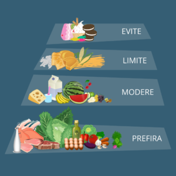
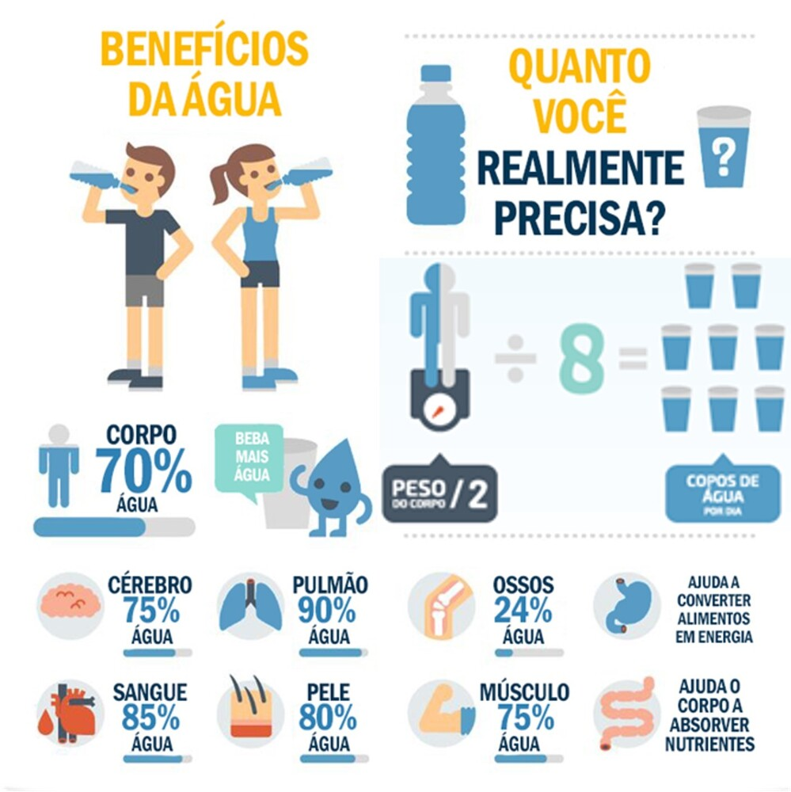
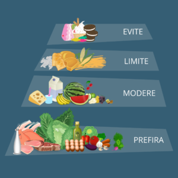
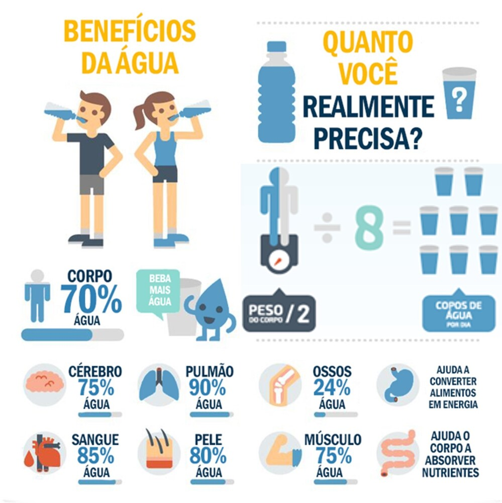

Alimentação Saudável
A alimentação equilibrada é fundamental para o bem-estar. Aqui estão algumas dicas:
- Variedade: Inclua uma variedade de alimentos nas suas refeições.
- Frutas e Vegetais: Consuma pelo menos cinco porções ao dia.
- Hidratação: Beba bastante água. A hidratação é crucial para a saúde geral.
- Moderação: Permita-se indulgências, mas com moderação.
 


